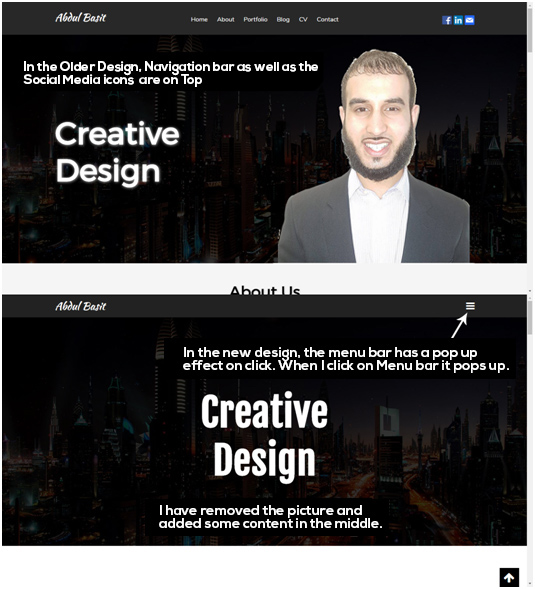
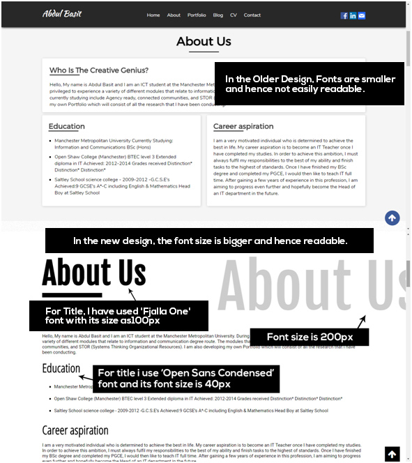
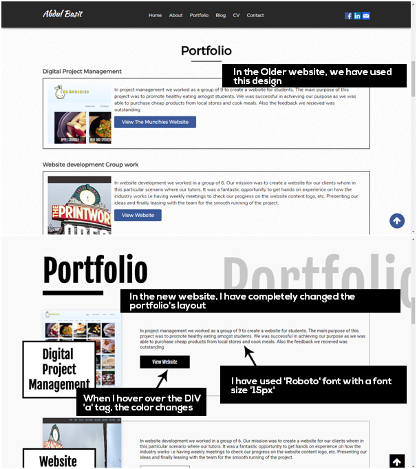
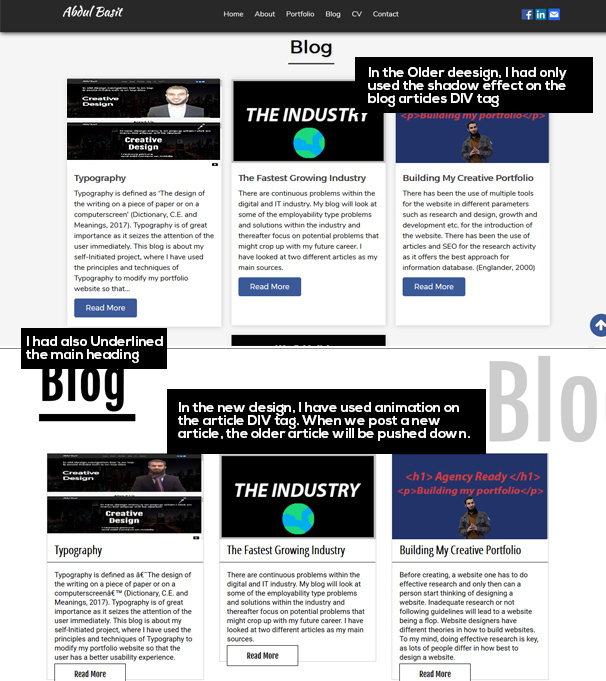
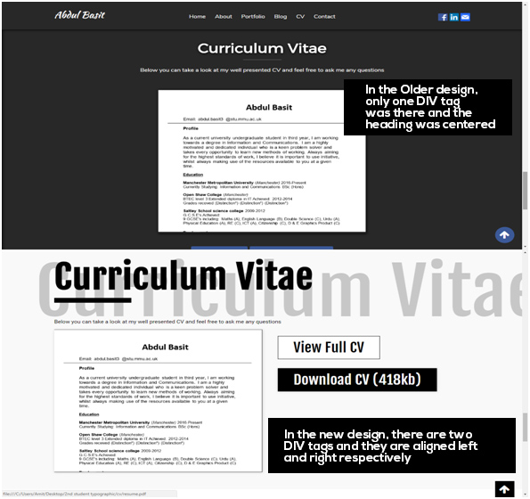
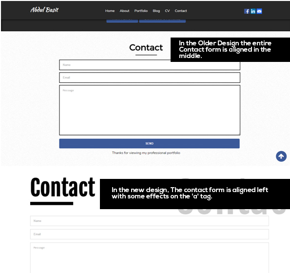
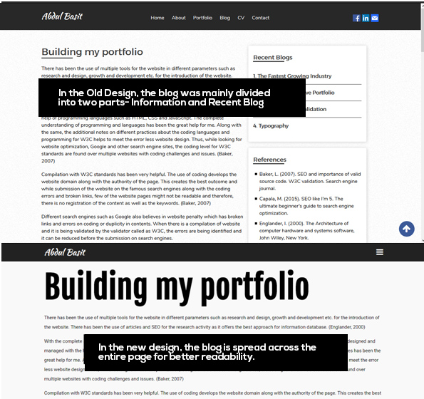

Typography is defined as 'The design of the writing on a piece of paper or on a computer screen' (Dictionary, C.E. and Meanings, 2017). It is of great importance as it seizes the attention of the user immediately.
Before digging deep into the project, I had to research and understand the various meanings and uses of typography. Only after this research, I could use the principles and techniques of Typography to modify my portfolio website, so that the user has a better usability experience. This is because Typography helps the users to access the website and its content easily, whilst reading and navigating through the website also becomes stress free and consequently the website appears to be more professional.
While implementing Typography principles on this website, I realized that it is essential that both the font type and size are kept consistent throughout the web design, as they convey a professional outlook. Furthermore, the font must be clear and concise to keep the user focused. The typography has a great impact on web design as it can ultimately be the difference between users staying engaged whilst browsing. The consistency, also applies to the hierarchy of the font as it is vital that the layout of the text is organized, guiding the reader through the web design. (Dictionary, C.E. and Meanings, 2017)
Another aspect of typography that was highlighted in my research was the alignment of the text. The alignment can grab the user's attention and emphasize key words on the web design. An example of which includes headlines for certain elements of the web page, because by centre aligning the headline, it allows the text to stand out and catches the attention of the user whilst the starting point of all the text changes and it looks uniform, as opposed to various alignments together. However, it is essential that the remainder of the text excluding the headline is left aligned as this will allow the user to follow the text easily. The use of typography is essential as it is a mechanism of conveying the message of the web design. (Dictionary, C.E. and Meanings, 2017)
In this web design, I used two types of technology which are HTML and CSS. The design was made simpler compared to the previous website and more concentration was levied on using .js plugins to build the navigation bar, the menu bar as well as alignment of content using typographic principles.
Throughout the research, I also found out that Typography helps to align texts and graphics. I then implemented this into my web design by using the new responsive menu option instead of the old menu bar. By deleting the picture and centre aligning the text, the web design was made easier to read considering the dark background.
Lupton, Ellen and Miller, J. Abbott (1993).
Whilst doing my research I learnt that in Typography, every character of the font which is chosen should have the same horizontal width. As per some general feedback that I had received, the font size and the font type were not easily readable. So, integrating both my research knowledge and the feedback, I then used 'Fjalla One' for the title 'About Us' whilst for subtitles the font 'Open Sans Condensed' was used. These fonts were used to make the reading easier as well as presentable.
Another interesting point discovered during my research was from stackoverflow.com where I learnt the 'double heading' feature which I used as can be seen in the above screenshot. It has and effect like that of an animation effect and makes the layout even more attractive whilst grabbing the reader's attention too. For this feature, I had to write the heading tags twice within the DIV tag and both heading tags were written within separate classes within the DIV tag. This enables the constructor to be able to set their positions separately for both the heading tags.
Another change is the colour scheme as well as the font of the portfolio page. These changes comply with the previous ones of trying to make the web design professional and reader friendly. The reader friendly font 'Roboto' with size 15px was used.
Also, unlike the previous website, the colour of the buttons text would change when hovering the mouse over the button text. This would help in highlighting the text on a darker background. This was done to ensure that the user would know which button is he about to click on, making it easier to read the text on a contrast background. In the older website, this feature wasn't available and was leading to difficulty for the users to be able to read the text.
In my previous website, the blog page heading was at the centre, but after doing my research I have changed it to left with an underline for a more professional look. During my research, I found out that Typography also highlights some form of animation while displaying the content. Using the research, I then applied animation on the article div tag which wasn't in the previous websites parallax designed theme. The articles within div tag are closed in a container and when a mouse is hovered over this container, the article highlights gaining the user's attention.
A lot of people struggle to get the CV page right in terms of presentation but I was determined to make a success of it. The reason being the CV page for me was the most important one within my website as this page had the most important and up-to-date information about my education, skills, work as well as extracurricular experience. I wanted to present the CV in a way that it gains attention immediately. Hence, unlike the old CV page, I added two div tags- one enclosing the CV and the other enclosing the View CV as well as a Download CV button. By adding these two it made the functionality simpler and geared the design towards better utilization of page space.
Having researched through countless examples, I realised that there was a lot of blank space on the contact section in my older portfolio website. I decided to align the contact form left to cover the blank space and gave a neater look to the overall design.
In the new and improved blog page, I made several changes to the design. The older design had an index on the right and was cramming all the information leading to poor presentation for reading. Instead, I have allowed the article to spread across the page with left alignment and the font size is also bigger, relieving the eyes of the stress due to smaller characters.
The latest article will appear on top and the previous article would be pushed down, to promote the most recent research and content. I have even used some images to facilitate learning with a combination of text as well as graphics.
Evaluation : I have still used the parallax design; however, the website is now more user friendly and readable than before. During this self-initiated project, I had difficulty in incorporating the various reading friendly fonts and their alignments. However, I am happy to learn these new styles. I also came across new techniques of presenting the text in terms of its colour, background colour, font, spacing and alignment. By learning and applying these new styles, I believe that these will help me to become a better web designer and content manager in the future. The only thing that I did not really approve was the change within blog page, as I wanted to provide a quick search index in case of more articles for quicker access.